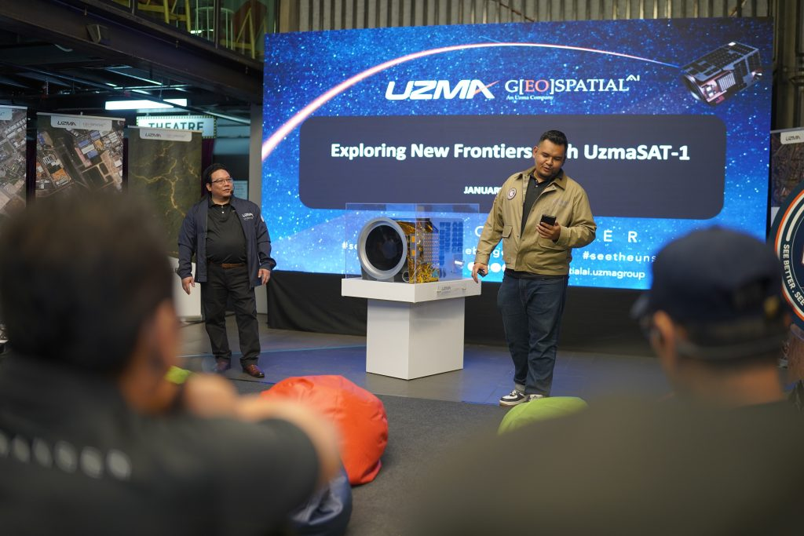
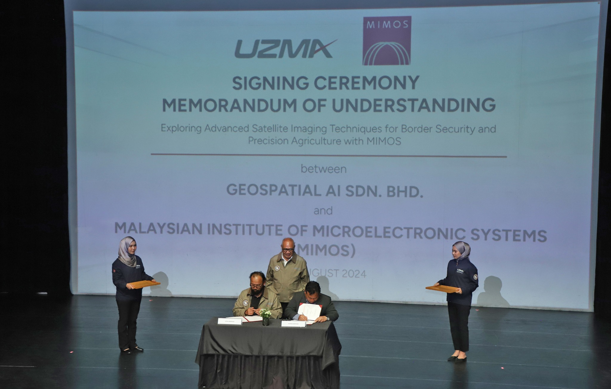
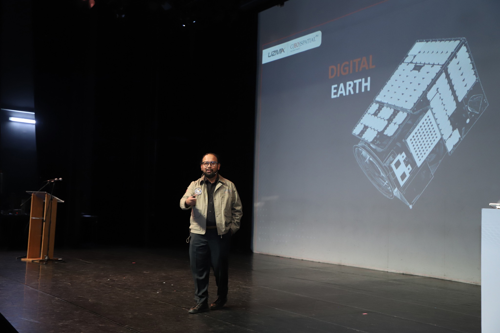

- Press Release, UzmaSAT-1
Uzma Berhad cetus era baharu teknologi angkasa negara melalui pelancaran satelit UzmaSAT-1
- January 16, 2025
- By Media GeoAI
PETALING JAYA: Uzma Berhad melakar sejarah dengan pelancaran satelit pemerhatian bumi pertama miliknya, UzmaSAT-1, pada 3.09 pagi waktu Malaysia di Pangkalan Angkasa Vandenberg, California, menggunakan roket Falcon 9 milik SpaceX.
Ringkasan AI
- Uzma Berhad melancarkan satelit pemerhatian bumi pertama, UzmaSAT-1, pada 3.09 pagi waktu Malaysia di Pangkalan Angkasa Vandenberg, California, menggunakan roket Falcon 9 milik SpaceX.
- UzmaSAT-1 diletakkan di orbit rendah bumi pada ketinggian 500 kilometer dan dilengkapi sensor multi-spectral band seperti RGB dan inframerah, mampu memberikan data imej terperinci.
- Satelit ini akan membantu sektor pertanian, perladangan, dan respons bencana, serta menyokong inisiatif Malaysia Space Exploration 2030 (MSE2030) dan Malaysia Space Industry Strategic Plan 2030 (SISP2030).
#uzmasat1
Satelit berteknologi tinggi ini diletakkan di orbit rendah bumi pada ketinggian 500 kilometer, dan mempunyai sensor multi-spectral band seperti RGB (merah, hijau, biru) dan inframerah, mampu memberikan data imej terperinci bagi membantu pelbagai sektor.
Satelit berteknologi tinggi ini diletakkan di orbit rendah bumi pada ketinggian 500 kilometer, dan mempunyai sensor multi-spectral band seperti RGB (merah, hijau, biru) dan inframerah, mampu memberikan data imej terperinci bagi membantu pelbagai sektor.
Menurut Ketua Pegawai Eksekutif Geospatial AI Sdn Bhd, Mohammad Fadhli Jamaluddin, Satelit UzmaSat-1 ini menjadi sebahagian daripada konstelasi 25 satelit milik rakan teknologi satellogic, membolehkan pemerhatian sehingga lima kali sehari di lokasi yang sama dengan resolusi ruang 50 sentimeter.
“UzmaSAT-1 dapat membantu sektor pertanian dengan memantau kesuburan tanaman, terutama kawasan padi seluas 50-kilometer persegi.
“Dengan menggunakan teknologi AI, satelit ini membolehkan kita mengenal pasti tanaman yang segar, berpenyakit, atau memerlukan pembajaan, sekali gus meramalkan hasil tanaman dengan lebih tepat.
“Di Malaysia juga, kita kaya dengan tanaman seperti kelapa sawit dan getah. Satelit ini sangat penting untuk membantu syarikat-syarikat perladangan dan pekebun kecil mematuhi peraturan Kesatuan Eropah (EUDR), yang memerlukan bukti tiada penebangan hutan sejak 2020.
“Dengan imejan satelit, kita dapat membuktikan perkara ini secara tepat,” katanya.

Satelit ini juga boleh digunakan bagi membantu syarikat-syarikat perladangan sawit memperoleh Pensijilan Minyak Sawit Mampan (Sustainability Palm Oil Certification) yang mampu meningkatkan premium penjualan sawit.
UzmaSAT-1 turut berkeupayaan memainkan peranan penting dalam respons bencana seperti banjir dan tanah runtuh.
“Satelit ini dapat mencerap kawasan yang luas dan memberikan data kritikal kepada pihak berkuasa, termasuk mengenal pasti jalan yang tidak boleh dilalui serta lokasi yang sesuai untuk menempatkan pusat pemindahan sementara.
“Dengan data gambaran besar ini, perancangan dapat dilakukan dengan lebih cekap,” tambahnya.
Mengulas mengenai prospek sektor ini, Ketua Pegawai Eksekutif Kumpulan Uzma Berhad, Datuk Kamarul Redzuan Muhamed menegaskan bahawa langkah diversifikasi ke industri angkasa adalah sejajar dengan transformasi syarikat.
“Kami menjangkakan bahagian Digital Earth kami akan berkembang dengan ketara seiring dengan peningkatan kesedaran terhadap perkhidmatan kami.
“Kami yakin industri angkasa lepas mempunyai potensi untuk turut menyumbang secara signifikan kepada portfolio Syarikat, seiring dengan perkhidmatan Minyak & Gas kami, di masa hadapan.
“Pelancaran UzmaSAT-1 menandakan permulaan era baharu untuk Uzma dan Malaysia dalam teknologi angkasa lepas.
“Dalam pada Uzma terus memanfaatkan data satelit dan teknologi canggih, syarikat berada di landasan yang terbaik untuk memacu inovasi dan pertumbuhan serantau, mengukuhkan kedudukannya sebagai peneraju dalam industri maklumat geospatial.”
Presiden dan Ketua Pegawai Eksekutif Kumpulan Industri-Kerajaan bagi Teknologi Tinggi (MIGHT), Rushdi Abdul Rahim, juga menyifatkan pelancaran ini sebagai bukti keberanian sektor swasta untuk mempelopori bidang teknologi tinggi.
“Kita sebagai pihak kerajaan sentiasa mengalu-alukan kerjasama awam swasta ini di mana investment teknologi seperti ini boleh meningkatkan kedaulatan teknologi negara.
“Oleh itu kita sentiasa menggalakkan kerjasama ini dan kita berharap lebih banyak syarikat-syarikat seperti Uzma mengambil tanggungjawab untuk membentuk masa depan teknologi negara,” ujar Presiden dan Ketua Pegawai Eksekutif Kumpulan Industri-Kerajaan bagi Teknologi Tinggi (MIGHT), Rushdi Abdul Rahim.

Sementara itu, Presiden dan Ketua Pegawai Eksekutif Kumpulan SIRIM Berhad, Datuk Ahmad Sabirin Arshad, turut memuji pencapaian ini sebagai langkah strategik untuk membangunkan ekonomi baharu berasaskan teknologi angkasa.
“Hari ini, kita melihat peluang besar untuk syarikat swasta seperti Uzma menerajui teknologi angkasa. Dulu, bidang ini banyak bergantung kepada kerajaan, tetapi kini industri baharu yang kita sebut sebagai ‘net economic’ mula berkembang.
“Pelancaran satelit ini adalah ‘game changer’, membuka jalan kepada ekonomi dan teknologi baharu yang lebih maju dan bukan sahaja penting untuk Malaysia, tetapi juga memberikan kelebihan diplomasi teknologi, terutama tahun ini apabila kita menjadi Pengerusi ASEAN,” tambah Presiden dan Ketua Pegawai Eksekutif Kumpulan SIRIM Berhad, Datuk Ahmad Sabirin Arshad.
Pelancaran ini turut menyokong inisiatif Malaysia Space Exploration 2030 (MSE2030) dan Malaysia Space Industry Strategic Plan 2030 (SISP2030) untuk meletakkan Malaysia sebagai pemain utama dalam ekonomi angkasa global.
Sumber: Astro Awani, Astro Awani | 15/01/2025 16:41MYT
Oleh Astro Awani
Related Posts
Looking for Answers to Your Industry Issues?
If you want us to share more about space technology, EUDR, EO satellite applications, and industry related, feel free to drop your contact and experience the technology yourself.